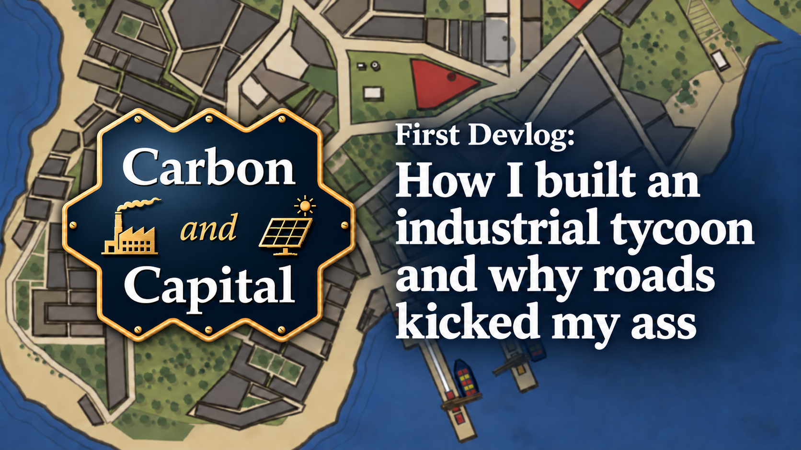

· Devlog 01
How I built an industrial tycoon and why roads kicked my ass
After nearly a year of solo development, Carbon and Capital has its first public demo. Here is what it took to get there.
Read the devlog →Behind the supply chain
Notes on building Carbon and Capital: the systems, mistakes and breakthroughs behind the game.

· Devlog 01
After nearly a year of solo development, Carbon and Capital has its first public demo. Here is what it took to get there.
Read the devlog →